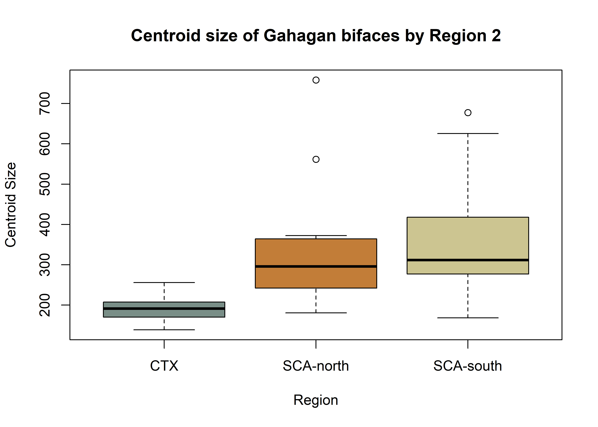
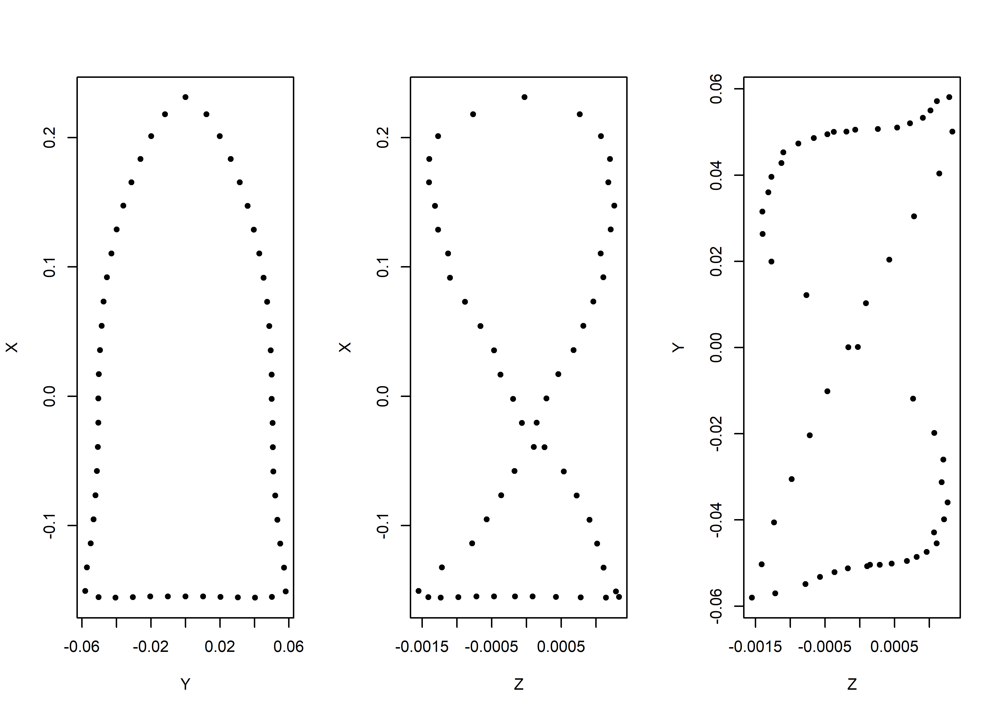

Chapter 5 Geometric morphometrics
This effort follows recent analyses of Gahagan biface shapes across the southern Caddo area and central Texas (Selden Jr., Dockall, and Shafer 2018; Selden Jr., Dockall, and Dubied 2020), where Gahgagan bifaces were found to differ in shape across the same geography as the Smithport Plain and Hickory Engraved bottles (Selden Jr. 2018a, 2018b, 2019; Patterson 1996). The analysis builds upon previous discussions and analyses conducted by Shafer (1973, 1974, 2006). A succinct overview of the analytical procedures used in the analysis is provided in the manuscript, and the analytical code provided in this document can be used to reproduce the results exactly.

(#fig:gahagan bifaces 2D)Gahagan bifaces from the southern Caddo area (SCA) and central Texas region.
5.1 Load geomorph and data
# load geomorph
devtools::install_github("geomorphR/geomorph", ref = "Stable", build_vignettes = TRUE)## Skipping install of 'geomorph' from a github remote, the SHA1 (37623742) has not changed since last install.
## Use `force = TRUE` to force installationlibrary(geomorph)
library(wesanderson)
# set working directory
setwd(getwd())
source('readmulti.csv.R')
# read .csv files
setwd("./data")
filelist <- list.files(pattern = ".csv")
coords <- readmulti.csv(filelist)
setwd("../")
# read qualitative data
qdata<-read.csv("qdata.csv",header=TRUE, row.names=1)
qdata<-qdata[match(dimnames(coords)[[3]],rownames(qdata)),]
qdata## Type trinomial sitename region region2
## 2300 Gahagan bvmnh Doerge Collection CTX CTX
## 2302 Gahagan bvmnh Doerge Collection CTX CTX
## 2303 Gahagan bvmnh Doerge Collection CTX CTX
## 2304 Gahagan bvmnh Doerge Collection CTX CTX
## 2305 Gahagan bvmnh Doerge Collection CTX CTX
## 2317 Gahagan bvmnh Doerge Collection CTX CTX
## 2318 Gahagan bvmnh Doerge Collection CTX CTX
## 2319 Gahagan bvmnh Doerge Collection CTX CTX
## 2320 Gahagan bvmnh Doerge Collection CTX CTX
## 2322 Gahagan bvmnh Doerge Collection CTX CTX
## 2323 Gahagan bvmnh Doerge Collection CTX CTX
## 2324 Gahagan bvmnh Doerge Collection CTX CTX
## 2325 Gahagan bvmnh Doerge Collection CTX CTX
## 2361 Gahagan bvmnh Doerge Collection CTX CTX
## 2362 Gahagan bvmnh Doerge Collection CTX CTX
## 2363 Gahagan bvmnh Doerge Collection CTX CTX
## 2364 Gahagan bvmnh Doerge Collection CTX CTX
## 2365 Gahagan bvmnh Doerge Collection CTX CTX
## 2366 Gahagan bvmnh Doerge Collection CTX CTX
## 2419 Gahagan bvmnh Doerge Collection CTX CTX
## 2426 Gahagan bvmnh Doerge Collection CTX CTX
## 3Ba90 Gahagan 16CD12 Mounds Plantation SCA SCA-north
## 3Bb1 Gahagan 16CD12 Mounds Plantation SCA SCA-north
## 3Bb3 Gahagan 16CD12 Mounds Plantation SCA SCA-north
## 3Bb4 Gahagan 16CD12 Mounds Plantation SCA SCA-north
## 3Bb5 Gahagan 16CD12 Mounds Plantation SCA SCA-north
## 3Bb6 Gahagan 16CD12 Mounds Plantation SCA SCA-north
## 3Bb7 Gahagan 16CD12 Mounds Plantation SCA SCA-north
## 3Bb8 Gahagan 16CD12 Mounds Plantation SCA SCA-north
## 4078-11 Gahagan 41CE19 George C Davis SCA SCA-south
## 4078-12 Gahagan 41CE19 George C Davis SCA SCA-south
## 4078-13 Gahagan 41CE19 George C Davis SCA SCA-south
## 4078-14 Gahagan 41CE19 George C Davis SCA SCA-south
## 4078-14B Gahagan 41CE19 George C Davis SCA SCA-south
## 4078-22 Gahagan 41CE19 George C Davis SCA SCA-south
## 4078-30 Gahagan 41CE19 George C Davis SCA SCA-south
## 4078-32 Gahagan 41CE19 George C Davis SCA SCA-south
## 4078-45 Gahagan 41CE19 George C Davis SCA SCA-south
## 4078-72 Gahagan 41CE19 George C Davis SCA SCA-south
## 4078-8 Gahagan 41CE19 George C Davis SCA SCA-south
## 4078-9 Gahagan 41CE19 George C Davis SCA SCA-south
## 424-169 Gahagan 41CE19 George C Davis SCA SCA-south
## 424-218 Gahagan 41CE19 George C Davis SCA SCA-south
## 424-221 Gahagan 41CE19 George C Davis SCA SCA-south
## 424-230 Gahagan 41CE19 George C Davis SCA SCA-south
## 424-33 Gahagan 41CE19 George C Davis SCA SCA-south
## 424-39 Gahagan 41CE19 George C Davis SCA SCA-south
## 424-40 Gahagan 41CE19 George C Davis SCA SCA-south
## 424-41 Gahagan 41CE19 George C Davis SCA SCA-south
## 424-50 Gahagan 41CE19 George C Davis SCA SCA-south
## 424-53 Gahagan 41CE19 George C Davis SCA SCA-south
## 463-1 Gahagan 41CE19 George C Davis SCA SCA-south
## 463-16 Gahagan 41CE19 George C Davis SCA SCA-south
## 463-23 Gahagan 41CE19 George C Davis SCA SCA-south
## 489 Gahagan 16RR1 Gahagan Mound SCA SCA-south
## 490 Gahagan 16RR1 Gahagan Mound SCA SCA-south
## 532 Gahagan 16RR1 Gahagan Mound SCA SCA-south
## 533 Gahagan 16RR1 Gahagan Mound SCA SCA-south
## 541 Gahagan 16RR1 Gahagan Mound SCA SCA-south
## 542 Gahagan 16RR1 Gahagan Mound SCA SCA-south
## 543 Gahagan 16RR1 Gahagan Mound SCA SCA-south
## 544 Gahagan 16RR1 Gahagan Mound SCA SCA-south
## 545 Gahagan 16RR1 Gahagan Mound SCA SCA-south
## 546 Gahagan 16RR1 Gahagan Mound SCA SCA-south
## 547 Gahagan 16RR1 Gahagan Mound SCA SCA-south
## 548 Gahagan 16RR1 Gahagan Mound SCA SCA-south
## 549 Gahagan 16RR1 Gahagan Mound SCA SCA-south
## 550 Gahagan 16RR1 Gahagan Mound SCA SCA-south
## 551 Gahagan 16RR1 Gahagan Mound SCA SCA-south
## 569 Gahagan 16RR1 Gahagan Mound SCA SCA-south
## 593 Gahagan 16RR1 Gahagan Mound SCA SCA-south
## 605 Gahagan 16RR1 Gahagan Mound SCA SCA-south
## 606 Gahagan 16RR1 Gahagan Mound SCA SCA-south
## 607 Gahagan 16RR1 Gahagan Mound SCA SCA-south
## 608 Gahagan 16RR1 Gahagan Mound SCA SCA-south
## 609 Gahagan 16RR1 Gahagan Mound SCA SCA-south
## 610 Gahagan 16RR1 Gahagan Mound SCA SCA-south
## 611 Gahagan 16RR1 Gahagan Mound SCA SCA-south
## 612 Gahagan 16RR1 Gahagan Mound SCA SCA-south
## 613 Gahagan 16RR1 Gahagan Mound SCA SCA-south
## 614 Gahagan 16RR1 Gahagan Mound SCA SCA-south
## 622 Gahagan 16RR1 Gahagan Mound SCA SCA-south
## 666 Gahagan 16RR1 Gahagan Mound SCA SCA-south
## BlkThn Gahagan 16CD12 Mounds Plantation SCA SCA-north
## bsp Gahagan 41BP882 Bastrop SP CTX CTX
## Case2LG Gahagan 16CD12 Mounds Plantation SCA SCA-north
## Case2SM Gahagan 16CD12 Mounds Plantation SCA SCA-north
## D11 Gahagan LA Pelican SCA SCA-south
## DM1 Gahagan LA Doc Marks SCA SCA-south
## ET221-1016 Gahagan 41CE19 George C Davis SCA SCA-south
## ET221-1260A Gahagan 41CE19 George C Davis SCA SCA-south
## ET221-993 Gahagan 41CE19 George C Davis SCA SCA-south
## Lf50-3 Gahagan LF50 Spiro SCA SCA-north
## LGGray Gahagan 16CD12 Mounds Plantation SCA SCA-north
## unk1 Gahagan bvmnh bvmnh CTX CTX
## unk2 Gahagan bvmnh bvmnh CTX CTX
## unk3 Gahagan bvmnh bvmnh CTX CTX
## unk4 Gahagan bvmnh bvmnh CTX CTX
## unk5 Gahagan bvmnh bvmnh CTX CTX
## unk6 Gahagan bvmnh bvmnh CTX CTX
## unk7 Gahagan bvmnh bvmnh CTX CTX
## unk8 Gahagan bvmnh bvmnh CTX CTX5.2 Generalised Procrustes Analysis
Y.gpa<-gpagen(coords, PrinAxes = TRUE, print.progress = FALSE)
# plot(Y.gpa)
# geomorph data frame
gdf<-geomorph.data.frame(shape=Y.gpa$coords, size=Y.gpa$Csize, region=qdata$region, region2=qdata$region2)
csz<-Y.gpa$Csize # attribute for boxplot
rgn2<-qdata$region2 # attribute for boxplot
# boxplot of SCA-north, SCA-south, and central Texas Gahagan bifaces by centroid size
boxplot(csz~rgn2,
main = "Centroid size of Gahagan bifaces by Region 2",
names = c("CTX", "SCA-north", "SCA-south"),
xlab = "Region",
ylab = "Centroid Size",
col = wes_palette("Moonrise2"),
)
# plot consensus configuration in 2D to illustrate axial twisting
par(mfrow=c(1,3))
plot(Y.gpa$consensus[,c("Y", "X")], pch=20)
plot(Y.gpa$consensus[,c("Z", "X")], pch=20)
plot(Y.gpa$consensus[,c("Z", "Y")], pch=20)

5.3 Principal Components Analysis
##
## Ordination type: Principal Component Analysis
## Centering and projection: OLS
## Number of observations 102
## Number of vectors 102
##
## Importance of Components:
## Comp1 Comp2 Comp3 Comp4 Comp5
## Eigenvalues 0.003456919 0.0008015117 0.0003561083 0.0002230681 0.000201588
## Proportion of Variance 0.624607852 0.1448198637 0.0643428519 0.0403047130 0.036423602
## Cumulative Proportion 0.624607852 0.7694277161 0.8337705680 0.8740752810 0.910498883
## Comp6 Comp7 Comp8 Comp9 Comp10
## Eigenvalues 9.695002e-05 8.436491e-05 5.604465e-05 4.496637e-05 2.705187e-05
## Proportion of Variance 1.751726e-02 1.524334e-02 1.012634e-02 8.124677e-03 4.887824e-03
## Cumulative Proportion 9.280161e-01 9.432595e-01 9.533858e-01 9.615105e-01 9.663983e-01
## Comp11 Comp12 Comp13 Comp14 Comp15
## Eigenvalues 2.237266e-05 1.879107e-05 1.540029e-05 0.0000110222 1.040191e-05
## Proportion of Variance 4.042368e-03 3.395234e-03 2.782577e-03 0.0019915288 1.879453e-03
## Cumulative Proportion 9.704407e-01 9.738359e-01 9.766185e-01 0.9786100299 9.804895e-01
## Comp16 Comp17 Comp18 Comp19 Comp20
## Eigenvalues 8.987219e-06 8.549225e-06 7.318254e-06 6.361362e-06 5.314828e-06
## Proportion of Variance 1.623841e-03 1.544703e-03 1.322287e-03 1.149393e-03 9.603013e-04
## Cumulative Proportion 9.821133e-01 9.836580e-01 9.849803e-01 9.861297e-01 9.870900e-01
## Comp21 Comp22 Comp23 Comp24 Comp25
## Eigenvalues 4.813501e-06 4.055465e-06 3.815912e-06 3.582330e-06 3.502677e-06
## Proportion of Variance 8.697197e-04 7.327553e-04 6.894720e-04 6.472675e-04 6.328756e-04
## Cumulative Proportion 9.879597e-01 9.886925e-01 9.893820e-01 9.900292e-01 9.906621e-01
## Comp26 Comp27 Comp28 Comp29 Comp30
## Eigenvalues 3.217001e-06 2.912249e-06 2.824777e-06 2.501451e-06 2.338948e-06
## Proportion of Variance 5.812587e-04 5.261951e-04 5.103904e-04 4.519707e-04 4.226091e-04
## Cumulative Proportion 9.912434e-01 9.917696e-01 9.922799e-01 9.927319e-01 9.931545e-01
## Comp31 Comp32 Comp33 Comp34 Comp35
## Eigenvalues 2.179895e-06 2.054475e-06 1.939460e-06 1.886723e-06 1.825971e-06
## Proportion of Variance 3.938709e-04 3.712096e-04 3.504283e-04 3.408995e-04 3.299226e-04
## Cumulative Proportion 9.935484e-01 9.939196e-01 9.942700e-01 9.946109e-01 9.949409e-01
## Comp36 Comp37 Comp38 Comp39 Comp40
## Eigenvalues 1.778283e-06 1.590082e-06 1.514771e-06 1.397117e-06 1.310930e-06
## Proportion of Variance 3.213062e-04 2.873014e-04 2.736940e-04 2.524359e-04 2.368633e-04
## Cumulative Proportion 9.952622e-01 9.955495e-01 9.958232e-01 9.960756e-01 9.963125e-01
## Comp41 Comp42 Comp43 Comp44 Comp45
## Eigenvalues 1.194399e-06 1.143650e-06 1.084225e-06 9.552895e-07 9.315219e-07
## Proportion of Variance 2.158081e-04 2.066385e-04 1.959016e-04 1.726050e-04 1.683106e-04
## Cumulative Proportion 9.965283e-01 9.967349e-01 9.969308e-01 9.971034e-01 9.972717e-01
## Comp46 Comp47 Comp48 Comp49 Comp50
## Eigenvalues 9.195996e-07 8.443343e-07 8.158838e-07 7.740276e-07 7.409567e-07
## Proportion of Variance 1.661564e-04 1.525572e-04 1.474167e-04 1.398540e-04 1.338786e-04
## Cumulative Proportion 9.974379e-01 9.975904e-01 9.977378e-01 9.978777e-01 9.980116e-01
## Comp51 Comp52 Comp53 Comp54 Comp55
## Eigenvalues 7.274802e-07 6.601756e-07 6.362967e-07 5.823388e-07 5.451560e-07
## Proportion of Variance 1.314436e-04 1.192828e-04 1.149682e-04 1.052190e-04 9.850065e-05
## Cumulative Proportion 9.981430e-01 9.982623e-01 9.983773e-01 9.984825e-01 9.985810e-01
## Comp56 Comp57 Comp58 Comp59 Comp60
## Eigenvalues 5.084282e-07 4.731003e-07 4.693755e-07 4.137550e-07 4.029531e-07
## Proportion of Variance 9.186453e-05 8.548137e-05 8.480837e-05 7.475866e-05 7.280694e-05
## Cumulative Proportion 9.986729e-01 9.987583e-01 9.988431e-01 9.989179e-01 9.989907e-01
## Comp61 Comp62 Comp63 Comp64 Comp65
## Eigenvalues 3.896934e-07 3.640046e-07 3.513582e-07 3.214590e-07 3.109272e-07
## Proportion of Variance 7.041114e-05 6.576960e-05 6.348460e-05 5.808231e-05 5.617938e-05
## Cumulative Proportion 9.990611e-01 9.991269e-01 9.991904e-01 9.992485e-01 9.993046e-01
## Comp66 Comp67 Comp68 Comp69 Comp70
## Eigenvalues 2.829565e-07 2.726509e-07 2.535681e-07 2.451163e-07 2.208437e-07
## Proportion of Variance 5.112554e-05 4.926349e-05 4.581555e-05 4.428844e-05 3.990279e-05
## Cumulative Proportion 9.993558e-01 9.994050e-01 9.994508e-01 9.994951e-01 9.995350e-01
## Comp71 Comp72 Comp73 Comp74 Comp75
## Eigenvalues 2.048011e-07 1.939748e-07 1.799089e-07 1.686136e-07 1.565267e-07
## Proportion of Variance 3.700417e-05 3.504804e-05 3.250655e-05 3.046567e-05 2.828177e-05
## Cumulative Proportion 9.995720e-01 9.996071e-01 9.996396e-01 9.996701e-01 9.996983e-01
## Comp76 Comp77 Comp78 Comp79 Comp80
## Eigenvalues 1.511513e-07 1.390247e-07 1.261567e-07 1.193092e-07 1.061959e-07
## Proportion of Variance 2.731053e-05 2.511946e-05 2.279443e-05 2.155720e-05 1.918783e-05
## Cumulative Proportion 9.997257e-01 9.997508e-01 9.997736e-01 9.997951e-01 9.998143e-01
## Comp81 Comp82 Comp83 Comp84 Comp85
## Eigenvalues 1.003169e-07 9.211416e-08 8.807853e-08 8.202946e-08 7.747433e-08
## Proportion of Variance 1.812559e-05 1.664350e-05 1.591433e-05 1.482136e-05 1.399833e-05
## Cumulative Proportion 9.998324e-01 9.998491e-01 9.998650e-01 9.998798e-01 9.998938e-01
## Comp86 Comp87 Comp88 Comp89 Comp90
## Eigenvalues 7.308207e-08 6.540497e-08 6.143039e-08 5.377294e-08 4.885165e-08
## Proportion of Variance 1.320472e-05 1.181759e-05 1.109945e-05 9.715878e-06 8.826683e-06
## Cumulative Proportion 9.999070e-01 9.999188e-01 9.999299e-01 9.999397e-01 9.999485e-01
## Comp91 Comp92 Comp93 Comp94 Comp95
## Eigenvalues 4.717929e-08 4.032717e-08 3.837788e-08 3.371704e-08 2.560835e-08
## Proportion of Variance 8.524515e-06 7.286451e-06 6.934247e-06 6.092109e-06 4.627005e-06
## Cumulative Proportion 9.999570e-01 9.999643e-01 9.999712e-01 9.999773e-01 9.999819e-01
## Comp96 Comp97 Comp98 Comp99 Comp100
## Eigenvalues 2.370381e-08 2.025419e-08 1.983573e-08 1.544328e-08 1.290993e-08
## Proportion of Variance 4.282885e-06 3.659595e-06 3.583987e-06 2.790345e-06 2.332611e-06
## Cumulative Proportion 9.999862e-01 9.999899e-01 9.999935e-01 9.999963e-01 9.999986e-01
## Comp101 Comp102
## Eigenvalues 7.781488e-09 1.037741e-33
## Proportion of Variance 1.405986e-06 1.875026e-31
## Cumulative Proportion 1.000000e+00 1.000000e+00# set plot parameters to plot by region2
reg2 <- qdata$region2
pch.gps.reg2 <- c(15,17,19)[as.factor(reg2)]
col.gps.reg2 <- wes_palette("Moonrise2")[as.factor(reg2)]
col.hull <- c("#798E87","#C27D38","#CCC591")
# plot pca by incision profile
pc.plot1 <- plot(pca, asp = 1,
pch = pch.gps.reg2,
col = col.gps.reg2)
shapeHulls(pc.plot1,
groups = reg2,
group.cols = col.hull)Figure 5.1: Results of PCA with central Texas sample in blue triangles, and southern Caddo area in red X’s. Reference shapes include the consensus configuration (gray) and the shape at the extreme of each PC in black. Reference shapes do not articulate with any specimens used in this analysis.
5.4 Define models
# allometry
fit.size <- procD.lm(shape ~ size, data = gdf, print.progress = FALSE, iter = 9999)
# allometry - common allometry, different means -> reg2
fit.sz.reg <- procD.lm(shape ~ size + reg2, data = gdf, print.progress = FALSE, iter = 9999)
# allometry - unique allometries -> reg2
fit.sz.reg2 <- procD.lm(shape ~ size * reg2, data = gdf, print.progress = FALSE, iter = 9999)
# size as a function of group
fit.sizereg2 <- procD.lm(size ~ reg2, data = gdf, print.progress = FALSE, iter = 9999)
# shape as a function of group
fit.shapereg2 <- procD.lm(shape ~ reg2, data = gdf, print.progress = FALSE, iter = 9999)5.5 Allometry
##
## Analysis of Variance, using Residual Randomization
## Permutation procedure: Randomization of null model residuals
## Number of permutations: 10000
## Estimation method: Ordinary Least Squares
## Sums of Squares and Cross-products: Type I
## Effect sizes (Z) based on F distributions
##
## Df SS MS Rsq F Z Pr(>F)
## size 1 0.04166 0.041664 0.07453 8.0538 3.0348 6e-04 ***
## Residuals 100 0.51732 0.005173 0.92547
## Total 101 0.55899
## ---
## Signif. codes: 0 '***' 0.001 '**' 0.01 '*' 0.05 '.' 0.1 ' ' 1
##
## Call: procD.lm(f1 = shape ~ size, iter = 9999, data = gdf, print.progress = FALSE)##
## Analysis of Variance, using Residual Randomization
## Permutation procedure: Randomization of null model residuals
## Number of permutations: 10000
## Estimation method: Ordinary Least Squares
## Sums of Squares and Cross-products: Type I
## Effect sizes (Z) based on F distributions
##
## Df SS MS Rsq F Z Pr(>F)
## size 1 0.04166 0.041664 0.07453 10.639 3.3865 1e-04 ***
## reg2 2 0.13352 0.066760 0.23886 17.046 4.9948 1e-04 ***
## Residuals 98 0.38380 0.003916 0.68660
## Total 101 0.55899
## ---
## Signif. codes: 0 '***' 0.001 '**' 0.01 '*' 0.05 '.' 0.1 ' ' 1
##
## Call: procD.lm(f1 = shape ~ size + reg2, iter = 9999, data = gdf, print.progress = FALSE)##
## Analysis of Variance, using Residual Randomization
## Permutation procedure: Randomization of null model residuals
## Number of permutations: 10000
## Estimation method: Ordinary Least Squares
## Sums of Squares and Cross-products: Type I
## Effect sizes (Z) based on F distributions
##
## Df SS MS Rsq F Z Pr(>F)
## size 1 0.04166 0.041664 0.07453 10.7071 3.3932 1e-04 ***
## reg2 2 0.13352 0.066760 0.23886 17.1564 5.0036 1e-04 ***
## size:reg2 2 0.01024 0.005122 0.01832 1.3162 0.7733 0.2238
## Residuals 96 0.37356 0.003891 0.66828
## Total 101 0.55899
## ---
## Signif. codes: 0 '***' 0.001 '**' 0.01 '*' 0.05 '.' 0.1 ' ' 1
##
## Call: procD.lm(f1 = shape ~ size * reg2, iter = 9999, data = gdf, print.progress = FALSE)##
## Analysis of Variance, using Residual Randomization
## Permutation procedure: Randomization of null model residuals
## Number of permutations: 10000
## Estimation method: Ordinary Least Squares
## Effect sizes (Z) based on F distributions
##
## ResDf Df RSS SS MS Rsq F Z P Pr(>F)
## 1 (Null) 96 1 0.37356 1e-32
## 2 96 0 0.37356 1e-32 1e-32 1
## Total 101 0.55899# allometry plots
# regscore (Drake and Klingenberg 2008)
plot(fit.size, type = "regression", reg.type = "RegScore", predictor = log(gdf$size), pch = pch.gps.reg2, col = col.gps.reg2)
# common allometric component (Mitteroecker 2004)
plotAllometry(fit.sz.reg, size = gdf$size, logsz = TRUE, method = "CAC", pch = pch.gps.reg2, col = col.gps.reg2)
# size-shape pca (Mitteroecker 2004)
plotAllometry(fit.size, size = gdf$size, logsz = TRUE, method = "size.shape", pch = pch.gps.reg2, col = col.gps.reg2)
# predline (Adams and Nistri 2010)
plotAllometry(fit.sz.reg2, size = gdf$size, logsz = TRUE, method = "PredLine", pch = pch.gps.reg2, col = col.gps.reg2)
# plot form
#knitr::include_graphics('images/gbiface-allom-form.png')
#fig.cap="Measures of Gahagan biface morphology as a function of size for bifaces from both regions, where small and large specimens from each region (black spheres) are contrasted with the consensus configuration (gray spheres)."5.6 Size/Shape ~ Region?
##
## Analysis of Variance, using Residual Randomization
## Permutation procedure: Randomization of null model residuals
## Number of permutations: 10000
## Estimation method: Ordinary Least Squares
## Sums of Squares and Cross-products: Type I
## Effect sizes (Z) based on F distributions
##
## Df SS MS Rsq F Z Pr(>F)
## reg2 2 0.16999 0.084997 0.30411 21.632 5.3584 1e-04 ***
## Residuals 99 0.38899 0.003929 0.69589
## Total 101 0.55899
## ---
## Signif. codes: 0 '***' 0.001 '**' 0.01 '*' 0.05 '.' 0.1 ' ' 1
##
## Call: procD.lm(f1 = shape ~ reg2, iter = 9999, data = gdf, print.progress = FALSE)# pairwise comparison of LS means = which differ?
sh.reg2 <- pairwise(fit.shapereg2, groups = qdata$region2)
summary(sh.reg2, confidence = 0.95, test.type = "dist")##
## Pairwise comparisons
##
## Groups: CTX SCA-north SCA-south
##
## RRPP: 10000 permutations
##
## LS means:
## Vectors hidden (use show.vectors = TRUE to view)
##
## Pairwise distances between means, plus statistics
## d UCL (95%) Z Pr > d
## CTX:SCA-north 0.12180388 0.04135610 10.475838 1e-04
## CTX:SCA-south 0.05267038 0.02814872 5.800386 1e-04
## SCA-north:SCA-south 0.09306458 0.03842682 8.237202 1e-04# pairwise distance between variances = standardization?
summary(sh.reg2, confidence = 0.95, test.type = "var")##
## Pairwise comparisons
##
## Groups: CTX SCA-north SCA-south
##
## RRPP: 10000 permutations
##
##
## Observed variances by group
##
## CTX SCA-north SCA-south
## 0.005043921 0.001078684 0.003790750
##
## Pairwise distances between variances, plus statistics
## d UCL (95%) Z Pr > d
## CTX:SCA-north 0.003965237 0.002953361 3.0023002 0.0117
## CTX:SCA-south 0.001253171 0.001955585 0.7101339 0.2262
## SCA-north:SCA-south 0.002712066 0.002653129 1.8896042 0.0457##
## Analysis of Variance, using Residual Randomization
## Permutation procedure: Randomization of null model residuals
## Number of permutations: 10000
## Estimation method: Ordinary Least Squares
## Sums of Squares and Cross-products: Type I
## Effect sizes (Z) based on F distributions
##
## Df SS MS Rsq F Z Pr(>F)
## reg2 2 544677 272339 0.36042 27.895 2.9772 1e-04 ***
## Residuals 99 966535 9763 0.63958
## Total 101 1511213
## ---
## Signif. codes: 0 '***' 0.001 '**' 0.01 '*' 0.05 '.' 0.1 ' ' 1
##
## Call: procD.lm(f1 = size ~ reg2, iter = 9999, data = gdf, print.progress = FALSE)# pairwise comparison of LS means = which differ?
sz.reg2 <- pairwise(fit.sizereg2, groups = qdata$region2)
summary(sz.reg2, confidence = 0.95, test.type = "dist")##
## Pairwise comparisons
##
## Groups: CTX SCA-north SCA-south
##
## RRPP: 10000 permutations
##
## LS means:
## Vectors hidden (use show.vectors = TRUE to view)
##
## Pairwise distances between means, plus statistics
## d UCL (95%) Z Pr > d
## CTX:SCA-north 145.74964 79.15668 4.6087559 0.0007
## CTX:SCA-south 163.02809 53.30119 8.5253197 0.0001
## SCA-north:SCA-south 17.27845 73.58797 -0.5632569 0.6517# pairwise distance between variances = standardization?
summary(sz.reg2, confidence = 0.95, test.type = "var")##
## Pairwise comparisons
##
## Groups: CTX SCA-north SCA-south
##
## RRPP: 10000 permutations
##
##
## Observed variances by group
##
## CTX SCA-north SCA-south
## 688.7314 23563.1976 10839.8620
##
## Pairwise distances between variances, plus statistics
## d UCL (95%) Z Pr > d
## CTX:SCA-north 22874.47 14841.912 3.624542 0.0058
## CTX:SCA-south 10151.13 9283.022 2.093560 0.0302
## SCA-north:SCA-south 12723.34 14152.784 1.692350 0.06495.7 Morphological disparity
# morphological disparity: do either of the groups display greater shape variation among individuals relative to the other group?
morphol.disparity(fit.shapereg2, groups = qdata$region2, data = gdf, print.progress = FALSE, iter = 9999)##
## Call:
## morphol.disparity(f1 = fit.shapereg2, groups = qdata$region2,
## iter = 9999, data = gdf, print.progress = FALSE)
##
##
##
## Randomized Residual Permutation Procedure Used
## 10000 Permutations
##
## Procrustes variances for defined groups
## CTX SCA-north SCA-south
## 0.005043921 0.001078684 0.003790750
##
##
## Pairwise absolute differences between variances
## CTX SCA-north SCA-south
## CTX 0.000000000 0.003965237 0.001253171
## SCA-north 0.003965237 0.000000000 0.002712066
## SCA-south 0.001253171 0.002712066 0.000000000
##
##
## P-Values
## CTX SCA-north SCA-south
## CTX 1.0000 0.0117 0.2262
## SCA-north 0.0117 1.0000 0.0457
## SCA-south 0.2262 0.0457 1.0000# morphological disparity: do either of the groups display greater size variation among individuals relative to the other group?
morphol.disparity(fit.sizereg2, groups = qdata$region2, data = gdf, print.progress = FALSE, iter = 9999)##
## Call:
## morphol.disparity(f1 = fit.sizereg2, groups = qdata$region2,
## iter = 9999, data = gdf, print.progress = FALSE)
##
##
##
## Randomized Residual Permutation Procedure Used
## 10000 Permutations
##
## Procrustes variances for defined groups
## CTX SCA-north SCA-south
## 688.7314 23563.1976 10839.8620
##
##
## Pairwise absolute differences between variances
## CTX SCA-north SCA-south
## CTX 0.00 22874.47 10151.13
## SCA-north 22874.47 0.00 12723.34
## SCA-south 10151.13 12723.34 0.00
##
##
## P-Values
## CTX SCA-north SCA-south
## CTX 1.0000 0.0058 0.0302
## SCA-north 0.0058 1.0000 0.0649
## SCA-south 0.0302 0.0649 1.00005.8 Mean shapes
#subset landmark coordinates to produce mean shapes for groups
new.coords<-coords.subset(A = Y.gpa$coords, group = qdata$region2)
names(new.coords)## [1] "CTX" "SCA-north" "SCA-south"#group shape means
mean<-lapply(new.coords, mshape)
# plot(mean$CTX)
# plot(mean$SCA)
# plotRefToTarget(mean$SCA,mean$CTX, method="vector",mag=2)
# knitr::include_graphics('images/mshape-region.png')
# fig.cap="Mean shapes for Gahagan bifaces from the southern Caddo area (left) and central Texas region (center). In the comparison of the two (right), the southern Caddo area is represented by gray spheres, and the central Texas region by linear vectors."5.9 Acknowledgments
I extend my gratitude to the Caddo Tribe of Oklahoma, the Williamson Museum at Northwestern State University, the Louisiana State Exhibit Museum, the Texas Archeological Research Laboratory at The University of Texas at Austin, the Brazos Valley Museum of Natural History, the Texas Parks and Wildlife Department, and the Sam Noble Oklahoma Museum of Natural Science for the requisite permissions and access needed to generate the scans of Gahagan bifaces. Thanks to Harry J. Shafer, Jeffrey S. Girard, Hiram F. (Pete) Gregory, Julian A. Sitters, Timothy K. Perttula, and David K. Thulman for their comments on a draft of this manuscript. Thanks also to Dean C. Adams, Michael L. Collyer, Emma Sherratt, Lauren Butaric, and Kersten Bergstrom for their constructive criticisms, comments, and suggestions throughout the development of this research programme, and to the editors and anonymous reviewers for their comments and constructive criticisms, which further improved the manuscript.
Components of this analytical work flow were developed and funded by a Preservation Technology and Training grant (P14AP00138) to RZS from the National Center for Preservation Technology and Training, and funding to scan the Gahagan bifaces at the Williamson Museum at Northwestern State University, Louisiana State Exhibit Museum, Texas Archeological Research Laboratory at The University of Texas at Austin, and Sam Noble Oklahoma Museum of Natural Science was provided to RZS by the Heritage Research Center at Stephen F. Austin State University.
5.10 References cited
References
Patterson, Leland W. 1996. “Manufacturing Variation of Gary and Kent Dart Points.” Journal of the Houston Archeological Society 114: 15–19.
Selden Jr., Robert Z. 2017. “Asymmetry of Caddo Ceramics from the Washington Square Mound Site: An Exploratory Analysis.” Digital Applications in Archaeology and Cultural Heritage 5: 21–28. https://doi.org/10.1016/j.daach.2017.04.003.
2018a. “A Preliminary Study of Smithport Plain Bottle Morphology in the Southern Caddo Area.” Bulletin of the Texas Archeological Society 89: 63–89.Selden Jr., Robert Z. 2017. “Asymmetry of Caddo Ceramics from the Washington Square Mound Site: An Exploratory Analysis.” Digital Applications in Archaeology and Cultural Heritage 5: 21–28. https://doi.org/10.1016/j.daach.2017.04.003.
2018a. “A Preliminary Study of Smithport Plain Bottle Morphology in the Southern Caddo Area.” Bulletin of the Texas Archeological Society 89: 63–89. 2018b. “Ceramic Morphological Organisation in the Southern Caddo Area: Quiddity of Shape for Hickory Engraved Bottles.” Journal of Archaeological Science: Reports 21: 884–96. https://doi.org/10.1016/j.jasrep.2018.08.045.Selden Jr., Robert Z. 2017. “Asymmetry of Caddo Ceramics from the Washington Square Mound Site: An Exploratory Analysis.” Digital Applications in Archaeology and Cultural Heritage 5: 21–28. https://doi.org/10.1016/j.daach.2017.04.003.
2018a. “A Preliminary Study of Smithport Plain Bottle Morphology in the Southern Caddo Area.” Bulletin of the Texas Archeological Society 89: 63–89. 2018b. “Ceramic Morphological Organisation in the Southern Caddo Area: Quiddity of Shape for Hickory Engraved Bottles.” Journal of Archaeological Science: Reports 21: 884–96. https://doi.org/10.1016/j.jasrep.2018.08.045. 2019. “Ceramic Morphological Organisation in the Southern Caddo Area: The Clarence H. Webb Collections.” Journal of Cultural Heritage 35: 41–55. https://doi.org/https://doi.org/10.1016/j.culher.2018.07.002.Selden Jr., Robert Z., John E. Dockall, and Morgane Dubied. 2020. “A Quantitative Assessment of Intraspecific Morphological Variation in Gahagan Bifaces from the Southern Caddo Area and Central Texas.” Southeastern Archaeology 39 (2): 125–45. https://doi.org/10.1080/0734578x.2020.1744416.
Selden Jr., Robert Z., John E. Dockall, and Harry J. Shafer. 2018. “Lithic Morphological Organisation: Gahagan Bifaces from the Southern Caddo Area.” Digital Applications in Archaeology and Cultural Heritage 10: e00080. https://doi.org/10.1016/j.daach.2018.e00080.
Shafer, Harry J. 1973. “Lithic Technology at the George C. Davis Site, Cherokee County, Texas.” Unpublished Ph.D. Dissertation, The University of Texas at Austin.
Shafer, Harry J. 1974. “Lithic Reduction Strategies at the George C. Davis Site.” Louisiana Archaeology 1: 66–74. https://docs.wixstatic.com/ugd/fefb33_71a3f0c39e5d47a2b55af09847e6d821.pdf.
Shafer, Harry J. 2006. “People of the Prairie: A Possible Connection to the Davis Site Caddo.” Texas Department of Transportation; Prewitt & Associates, Inc.